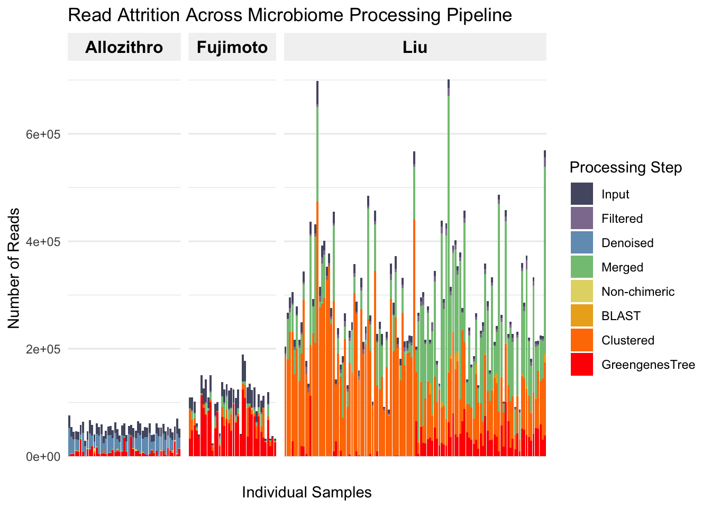
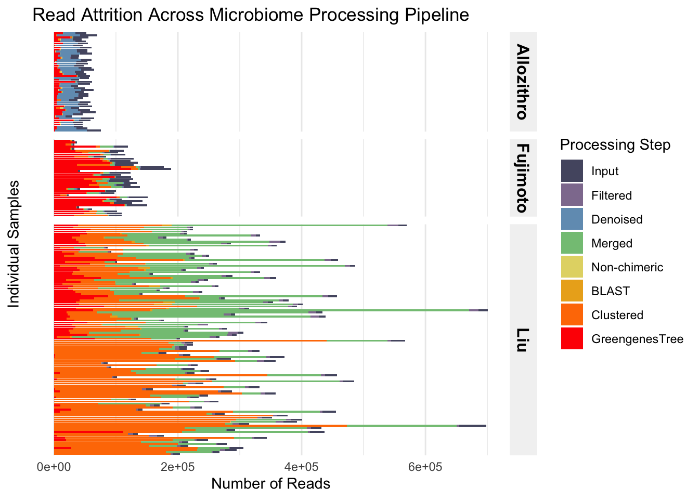
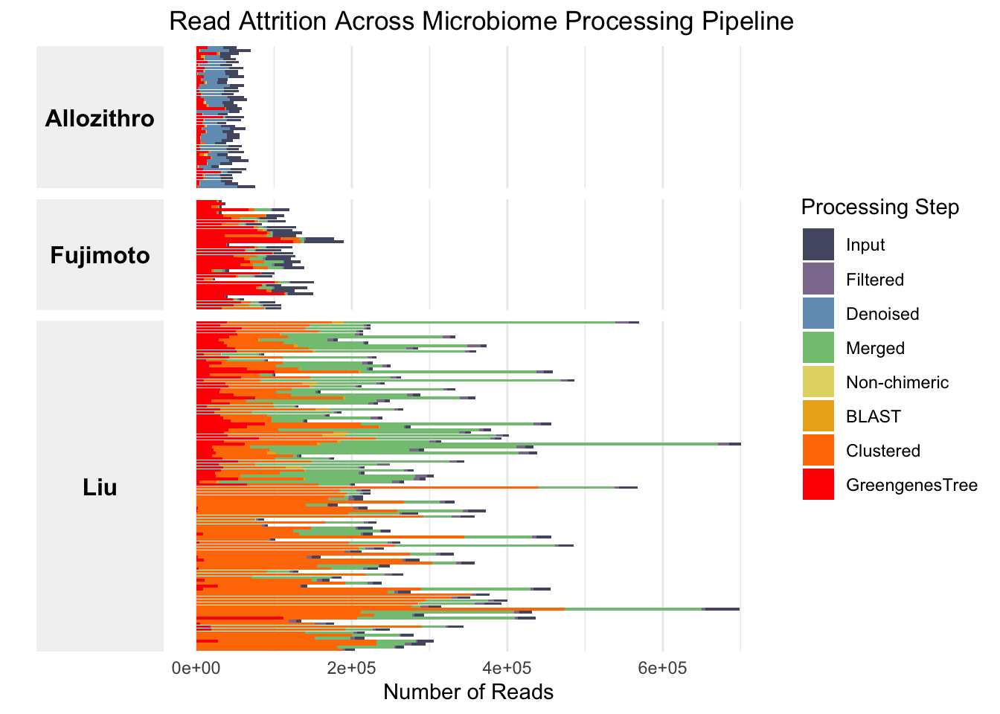

All samples from a single study were processed with the DADA2 pipeline, then BLAST, then matched to greengenes representative sequences skeleton with between 95-97% clustering threshold, and then matched to the greengenes phylogenetic tree reference database.
The bar charts shown in this document show the uniform pre-processing pipeline for a subset of the data (specifically, the data which matched the inclusion/exclusion criteria).
Notes
One sample was corrupted from the fujimoto dataset: SRR28984726. Unable to import this into qiime. It is one of the 591 samples shown in the inclusion/exclusion diagram (although it gets filtered out in the baseline vs followup stage). It is not currently (03.24.2026) included in the merged_metadata.tsv so it had to be manually added to the dataframe.
Liu was forward reads only. So the ‘merged’ column is directly imputed from the denoised column.
Liu has 2 samples/person/timepoint. The samples get merged later on.
More filtering happens once the ASV tables are merged, but that is not displayed here in any of the figures. Those next steps are:
Samples put into a single ASV table
ASV table filtered for sequences that appear in at least 2 samples. Then ASV table filtered for samples with non-empty libraries.
Import to R
Filter for ‘included’ samples only (see inclusion/exclusion criteria + non-zero library size)
Merge the reads from Liu study by adding together the libraries from samples corresponding to the same observation
Run batch correction between studies using combat-seq (this step filters out samples for which all observed sequences are found only within one single study. This occurs in only 1 sample)
Inclusion/Exclusion
Here is an overview of the inclusion/exclusion steps.
#| include: false# 1. Filter the data to included == 1 and select the relevant columns# (Assuming your dataframe is currently named 'df')df_filtered <- barplot_05 %>%filter(included ==1) %>%select(sample.id, study, Input = input, Filtered = filtered, Denoised = denoised, Merged = merged, `Non-chimeric`=`non-chimeric`, BLAST, Clustered, GreengenesTree)# 2. Reshape the data from wide to long format for ggplotdf_long <- df_filtered %>%pivot_longer(cols =-c(sample.id, study),names_to ="Pipeline_Step",values_to ="Reads" )# 3. Order the factor levels so they draw in the correct sequence (largest in back, smallest in front)# If you ever find your smaller bars are hidden behind the big ones, simply reverse this vector with rev()step_order <-c("Input", "Filtered", "Denoised", "Merged", "Non-chimeric", "BLAST", "Clustered", "GreengenesTree")df_long$Pipeline_Step <-factor(df_long$Pipeline_Step, levels = step_order)# 4. Generate the custom color palette (Dusty Blue -> Neutral -> Bright Red)# colorRampPalette creates a smooth gradient across 8 distinct colorsmy_colors <-colorRampPalette(c("#7B9ACC", "#E5D8BD", "#FF0000"))(8)my_colors2 <-c("#4B0082", "#9400D3", "#1E90FF", "#32CD32", "#FFFF00", "#FFDB58", "#FF8C00", "#FF0000")my_colors3 <-c("#555770", "#8F7C9E", "#729CBE", "#84C484", "#E3D774", "#EBAE1E", "#FF7B00", "#FF0000")df_long$logReads <-pmax(log(df_long$Reads), 0)df_long$study <-factor(df_long$study,levels =c("Allo", "Fuji", "Liu"),labels =c("Allozithro","Fujimoto","Liu"))
Code
read_attrition_option1 <-ggplot(df_long, aes(x = sample.id, y = Reads, fill = Pipeline_Step)) +# Use position = "identity" to layer the bars over each other instead of stacking themgeom_bar(stat ="identity", position ="identity") +# Apply our custom dusty blue to bright red palettescale_fill_manual(values = my_colors3) +# Group the x-axis cleanly by 'study' using facetsfacet_grid(~ study, scales ="free_x", space ="free_x") +# Clean up labels and theminglabs(title ="Read Attrition Across Microbiome Processing Pipeline",x ="Individual Samples",y ="Number of Reads",fill ="Processing Step" ) +theme_minimal() +theme(# Make sample names less visible per your request (small size, angled)axis.text.x =element_text(angle =90, vjust =0.5, hjust =1, size =0),# Make the 'study' group indicators bold and clear at the topstrip.text.x =element_text(size =12, face ="bold", color ="black"),strip.background =element_rect(fill ="gray95", color =NA),panel.grid.major.x =element_blank() # Removes vertical grid lines for a cleaner look )read_attrition_option1

Code
# 5. Build the horizontal plotread_attrition_option2 <-ggplot(df_long, aes(y = sample.id, x = Reads, fill = Pipeline_Step)) +# Use position = "identity" to layer the barsgeom_bar(stat ="identity", position ="identity") +# Apply our custom dusty blue to bright red palettescale_fill_manual(values = my_colors3) +# Group the y-axis cleanly by 'study' using facets (study ~ . stacks them vertically)facet_grid(study ~ ., scales ="free_y", space ="free_y") +# Clean up labels and theming (Note x and y labels are swapped)labs(title ="Read Attrition Across Microbiome Processing Pipeline",y ="Individual Samples",x ="Number of Reads",fill ="Processing Step" ) +theme_minimal() +theme(# Sample names are easier to read horizontally, just keep them smallaxis.text.y =element_text(size =0),# Make the 'study' group indicators bold (vertical facets put strips on the right)strip.text.y =element_text(size =12, face ="bold", color ="black", angle =270),strip.background =element_rect(fill ="gray95", color =NA),# Remove horizontal grid lines for a cleaner lookpanel.grid.major.y =element_blank() ,legend.position ="right" )read_attrition_option2

Code
read_attrition_option3 <-ggplot(df_long, aes(y = sample.id, x = Reads, fill = Pipeline_Step)) +# Use position = "identity" to layer the barsgeom_bar(stat ="identity", position ="identity") +# Apply our custom dusty blue to bright red palettescale_fill_manual(values = my_colors3) +# switch = "y" moves the facet strips from the right to the leftfacet_grid(study ~ ., scales ="free_y", space ="free_y", switch ="y") +# Clean up labelslabs(title ="Read Attrition Across Microbiome Processing Pipeline",y ="", # Changed from Sample ID since we hid the sample namesx ="Number of Reads",fill ="Processing Step" ) +theme_minimal() +theme(# Remove individual sample names and ticks entirelyaxis.text.y =element_blank(),axis.ticks.y =element_blank(),# Position the left-side strips perfectlystrip.placement ="outside", # Puts the strip outside the main plot area# Note we use strip.text.y.left now because we switched sidesstrip.text.y.left =element_text(size =12, face ="bold", color ="black", angle =0),strip.background =element_rect(fill ="gray95", color =NA),# Remove horizontal grid linespanel.grid.major.y =element_blank() )read_attrition_option3

Code
ggplot(df_long%>%#arrange(Reads)%>%mutate(Pipeline_Step <-factor(df_long$Pipeline_Step,levels =rev(step_order))),aes(y = sample.id, x = logReads, fill = Pipeline_Step)) +# Use position = "identity" to layer the barsgeom_bar(stat ="identity", position ="identity") +# Apply our custom dusty blue to bright red palettescale_fill_manual(values = my_colors3) +# switch = "y" moves the facet strips from the right to the leftfacet_grid(study ~ ., scales ="free_y", space ="free_y", switch ="y") +# Clean up labelslabs(title ="Read Attrition Across Microbiome Processing Pipeline",y ="", # Changed from Sample ID since we hid the sample namesx ="Log(Number of Reads)",fill ="Processing Step" ) +theme_minimal() +theme(# Remove individual sample names and ticks entirelyaxis.text.y =element_blank(),axis.ticks.y =element_blank(),# Position the left-side strips perfectlystrip.placement ="outside", # Puts the strip outside the main plot area# Note we use strip.text.y.left now because we switched sidesstrip.text.y.left =element_text(size =12, face ="bold", color ="black", angle =0),strip.background =element_rect(fill ="gray95", color =NA),# Remove horizontal grid linespanel.grid.major.y =element_blank() )